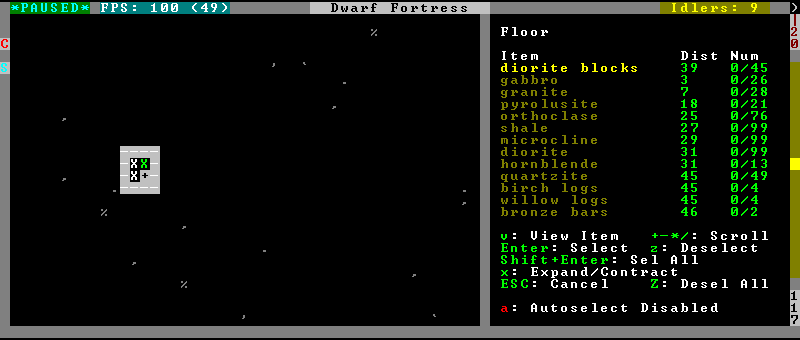
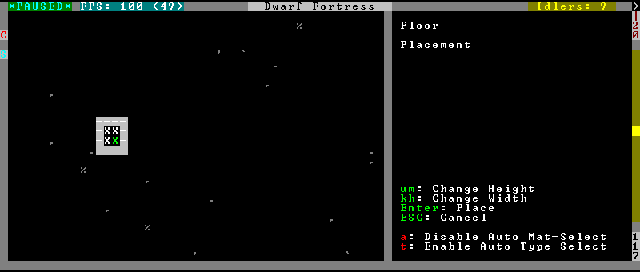

automaterial¶
This plugin makes building constructions (walls, floors, fortifications, etc) much easier by saving you from having to trawl through long lists of materials each time you place one.
It moves the last used material for a given construction type to the top of the list, if there are any left. So if you build a wall with chalk blocks, the next time you place a wall the chalk blocks will be at the top of the list, regardless of distance (it only does this in “grouped” mode, as individual item lists could be huge). This means you can place most constructions without having to search for your preferred material type.
Usage¶
enable automaterial

Pressing a while highlighting any material will enable that material for “auto select” for this construction type. You can enable multiple materials. Now the next time you place this type of construction, the plugin will automatically choose materials for you from the kinds you enabled. If there is enough to satisfy the whole placement, you won’t be prompted with the material screen at all – the construction will be placed and you will be back in the construction menu.
When choosing the construction placement, you will see a couple of options:

Use a here to temporarily disable the material autoselection, e.g. if you need to go to the material selection screen so you can toggle some materials on or off.
The other option (auto type selection, off by default) can be toggled on with t. If you toggle this option on, instead of returning you to the main construction menu after selecting materials, it returns you back to this screen. If you use this along with several autoselect enabled materials, you should be able to place complex constructions more conveniently.
The automaterial plugin also enables extra construction placement modes,
such as designating areas larger than 10x10 and allowing you to designate hollow
rectangles instead of the default filled ones.